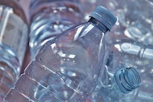

CleanTide Algae Removal
A unique system designed to safely remove harmful algae blooms from coastal waters. Using natural filtering processes and biodegradable chemicals, CleanTide helps restore balance to ecosystems by removing excess nutrients that cause algal blooms while preserving marine life.

BioDegrade Plastics
A line of biodegradable plastics designed for use in the marine industry and coastal communities. These products—ranging from packaging to fishing gear—break down naturally without leaving harmful residues, helping to reduce the overall plastic burden on oceans.